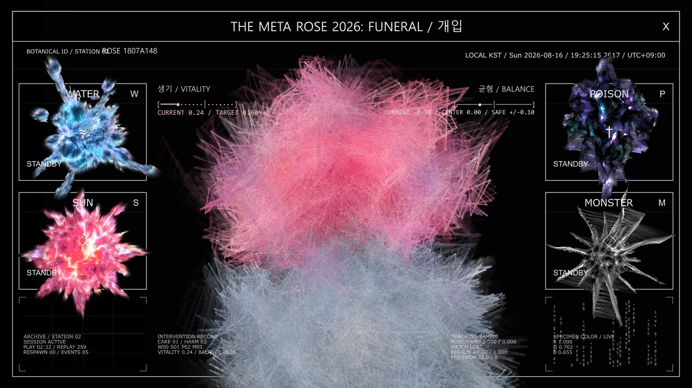
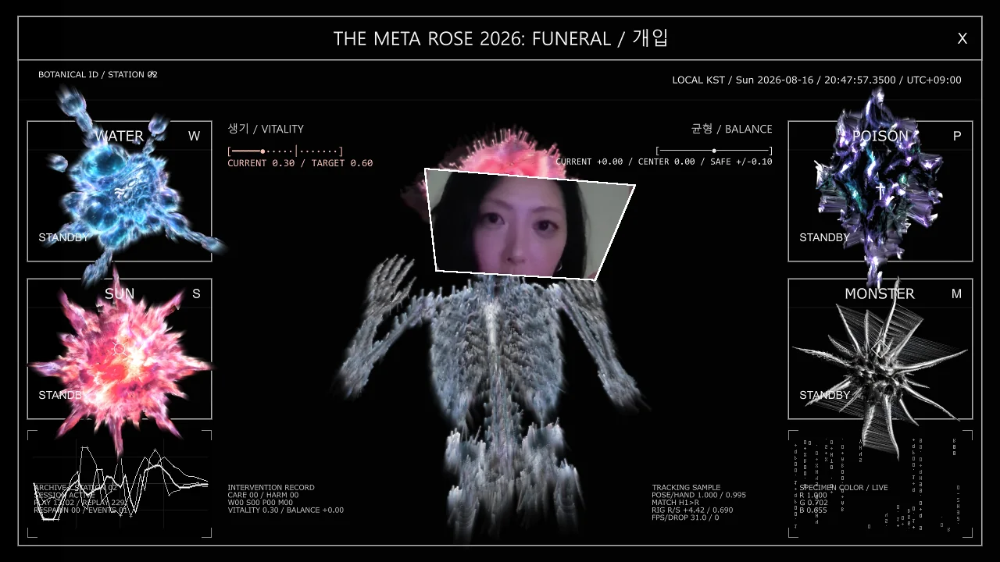
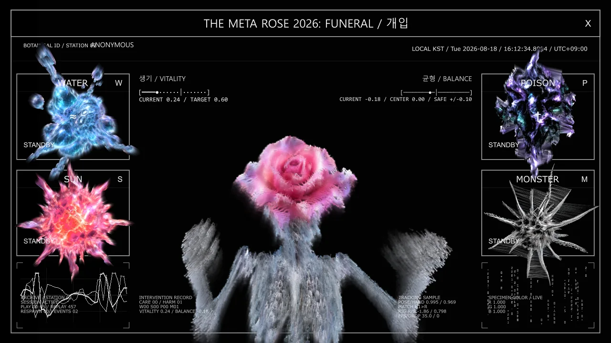
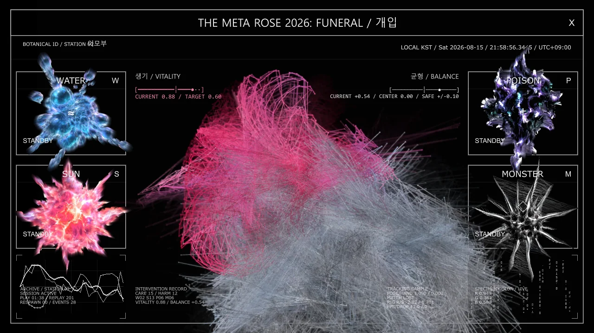
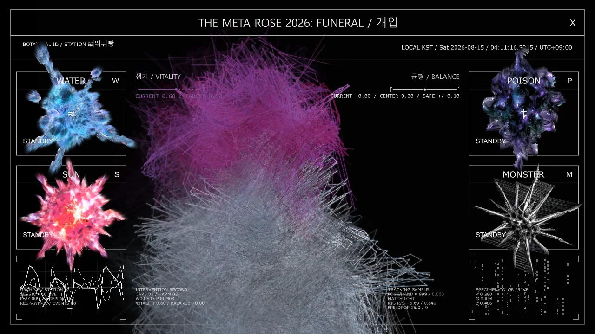
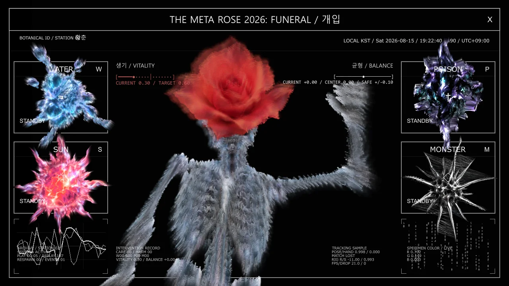

Meta Rose: The Funeral
작품 소장 문의
관심 작품과 설치하려는 공간을 알려주세요.
- 이메일
- minniepark.studio@gmail.com
- 제목
- Artwork acquisition enquiry, Meta Rose: The Funeral
주소를 복사해 사용하는 이메일 서비스에서 작성해도 됩니다.

내가 죽여 온 나를 위한 장례식. 우리 자신에게서 반복해서 지우려 했던 부분은 무엇이 되는가?
작품 개요
Meta Rose: The Funeral은 받아들여질 만한 모습을 갖추기 위해 억눌러 온 자아의 여러 면을 바라봅니다. 장례식은 배제하거나 바꾸고 남겨둔 자신을 다시 마주하는 자리가 됩니다. 해골 형상에 꽂힌 생장미는 생명력과 죽음을 하나의 물리적 구조 안에 놓으며, 터치에 반응하는 사운드, 빛과 무빙이미지는 설치를 참여자의 행동과 연결합니다.
전시는 명명, 개입, 목격, 기록의 네 부분으로 구성됩니다. 터치, 제스처, 가까워짐과 관찰을 통해 각각 신체와 이미지 사이에 서로 다른 관계를 만듭니다. 정해진 순서로 완료하는 과정이 아니라 서로 구별되는 만남으로 구상한 네 작업은 돌봄과 훼손, 아름다움과 불편함을 나란히 놓고, 상충하는 상태가 함께 존재하는 양가성을 다룹니다.
01 / 명명
관객은 해골의 손을 잡고 생장미를 만집니다. 각 꽃은 서로 다른 사운드, 빛과 이미지의 층위를 활성화합니다. 접촉을 지속하면 반응이 깊어지고, 서로 다른 장미를 만지면 여러 층이 결합하며 오디오비주얼 구성이 달라집니다. 어떤 꽃을 만지는지뿐 아니라 접촉의 시간과 조합이 경험을 구성합니다.
선택한 구성은 이미지로 기록한 뒤 이름을 붙일 수 있습니다. 명명은 경험을 미리 규정하기보다 경험 이후에 이루어집니다. 참여자는 설치를 경험하기 전에 감정의 범주를 선택할 필요가 없습니다. 남겨진 이미지와 언어는 열린 구성 속에서 선택한 특정 순간의 기록이 됩니다.

02 / 개입
카메라 기반 제스처 추적과 반응형 컨트롤러가 참여자의 행동을 디지털 해골 신체에 연결합니다. 관객은 그 균형과 생명력을 변화시키며, 개입이 결과를 수반하는 행위임을 마주합니다. 장미와 해골, 돌봄과 훼손, 행동하는 나와 지켜보는 내가 하나의 이미지 안에 공존합니다.
03 / 목격
장미는 처음에 흐리고 왜곡된 모습으로 나타납니다. 세 번의 가까워지는 행위가 흘러가는 이미지를 늦추고, 주변 세계가 계속 움직이는 가운데 장미의 다른 얼굴이 드러납니다. 주의를 기울이는 일이 참여의 방식이 됩니다. 이미지에 다가가고 머무는 행위는 그것을 볼 수 있는 조건을 바꿉니다. 작품은 참여자가 머무는 시간을 완전히 멈춰둘 수 없는 시간의 흐름과 만나게 합니다.
04 / 기록
소리 없이 반복되는 영상은 전시를 만드는 과정으로 시선을 되돌립니다. 손, 실패한 테스트, 상처, 연결과 반복된 노동이 완성된 표면 뒤로 사라지지 않고 드러납니다. 이 기록은 관객과의 만남에 앞서 있었던 재료와 신체의 작업을 담으며 반응형 작품들과 나란히 놓입니다.

참여의 흔적과 재료의 시간
연결된 폰 인터페이스에서는 선택한 이미지와 작성한 응답을 남길 수 있습니다. 이 흔적은 작품 안에서의 참여와 선택을 기록하며, 누군가의 감정 상태를 객관적으로 판독한 결과로 제시되지 않습니다. 이는 감정적 경험을 고정된 이름으로 축소하지 않으면서 어떻게 기록할 수 있을지에 관한 프로젝트의 탐구에서 중요한 구분입니다.
장미는 사람들의 손길을 거치고 마르며 시드는 동안에도 달라집니다. 장미의 시간은 다시 시작할 수 있는 디지털 시스템의 시간과 다릅니다. 사진은 재료의 특정한 모습을 남기지만 그 변화 자체를 되돌리지는 않습니다. 반복 가능한 이미지와 되돌릴 수 없는 생명 과정 사이의 긴장은 전시 이후의 장미를 지속적으로 기록하는 Park의 작업과 The Funeral을 연결합니다.
전시
2026년 8월 15-18일 서울 연남동 미진플로어에서 서울프린지페스티벌의 개인전으로 선보였습니다.
작품 기술 정보
서울프린지페스티벌 / 2026
- 매체
- 명명, 개입, 목격, 기록의 네 부분으로 구성된 인터랙티브 오디오비주얼 설치.
- 재료
- 생장미, 해골 모형, 전도성 접점, 사운드, 빛과 무빙이미지.
- 설치 크기
- 장소와 설치 구성에 따라 가변.
- 제작 도구
- TouchDesigner(주 소프트웨어), 터치 반응 시스템, 카메라 기반 제스처 추적, 반응형 컨트롤러, 연결된 폰 인터페이스와 루프 영상.
- 작가 / 제작
- Minnie Park, 작품 구상, 전시 기획 및 제작.
주요 기록
Visual Index →





작품 소장 문의 →
관심 작품과 설치하려는 공간을 알려주세요.
- 이메일
- minniepark.studio@gmail.com
- 제목
- Artwork acquisition enquiry, Meta Rose: The Funeral
주소를 복사해 사용하는 이메일 서비스에서 작성해도 됩니다.